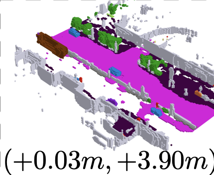
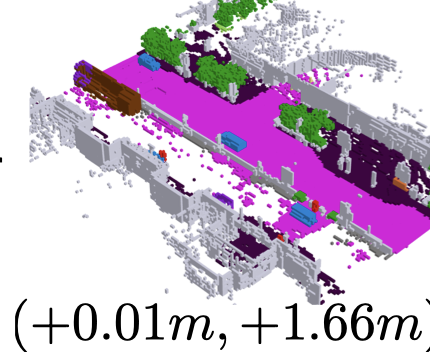
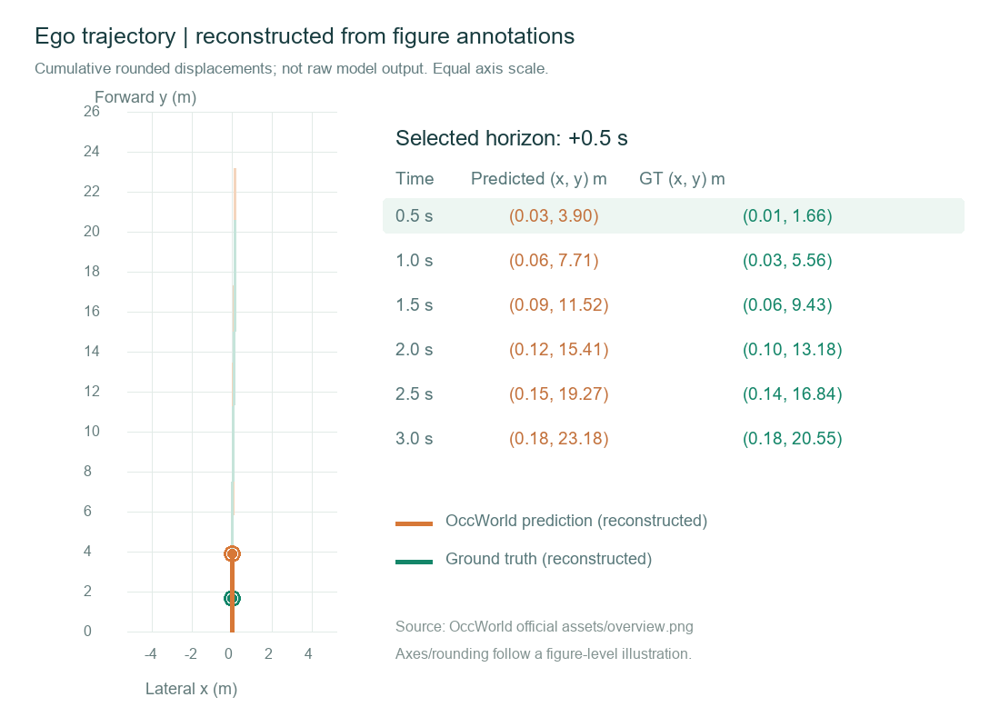
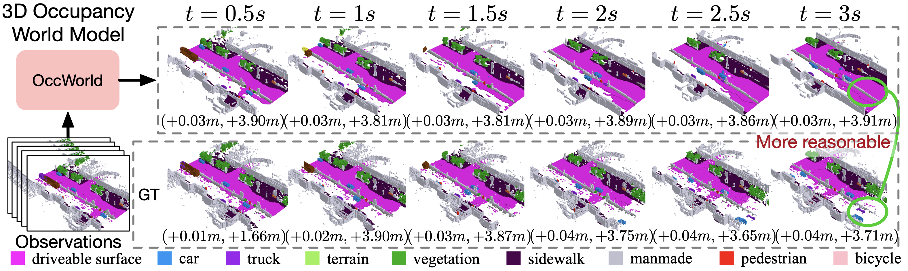

01 / DATA INPUT
输入
配置数据集与训练方法，准备世界模型的环境输入。
DATA → WORLD MODEL
数据输入模块
保留数据集与训练方法配置入口。
本阶段先展示已有预测和规划结果。
02 / MODEL TRAINING
训练
回放离线训练流程，不启动训练或加载权重。
OFFLINE PROCESS
等待开始
点击播放训练流程。
0%
1数据准备
2VQVAE
3OccWorld
4验证
03 / FUTURE OCCUPANCY
预测
加载已有预测结果，对照未来占用与真实未来；后续可替换为本系统模型输出。

这个时间点暂无预测图片

这个时间点暂无真值图片
未来时间轴两张图片与规划视图同步切换
沿用当前结果与时间点，继续查看未来行驶轨迹。
图中保留了作者的位移标注与圈注。+3 秒可对比道路和周边车辆的差异；这些差异不等同于本系统计算的评估指标。
04 / EGO TRAJECTORY
规划
承接预测模块选中的未来环境，展示对应的未来行驶轨迹。

这个时间点暂无轨迹图片
查看官方原图与素材来源
占用与观测图片均裁自 OccWorld 官方 overview.png；保留原图圈注。作者：Wenzhao Zheng、Weiliang Chen、Yuanhui Huang、Borui Zhang、Yueqi Duan、Jiwen Lu。

轨迹重绘依据同一图中保留两位小数的位移标注；累加方式参考 autoreg_for_stp3_metric 中的 torch.cumsum。这是图片级辅助解读，未复现模型推理。查看数据来源记录 · Apache-2.0 许可证。